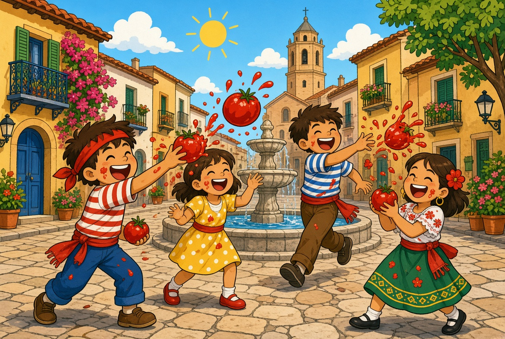

Tomato Fight
The tomato fight is in Bunol, in Spain. For about one hour, people throw soft tomatoes at each other. The street turns red. After that, the town is washed down.

The tomato fight is in Bunol, in Spain. For about one hour, people throw soft tomatoes at each other. The street turns red. After that, the town is washed down.